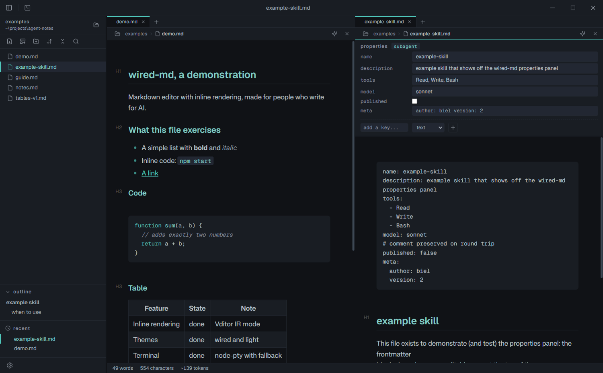
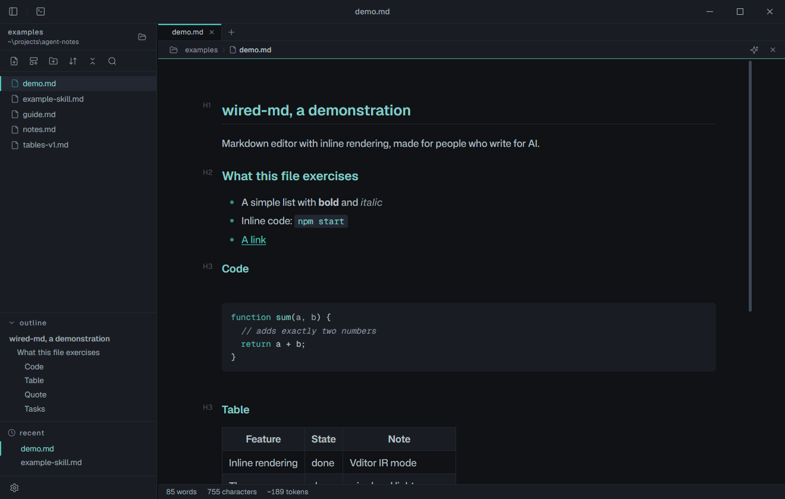

Open notes follow the disk
When an agent rewrites an open file, a clean tab reloads in place. A tab with unsaved edits asks: reload, keep yours, or compare the two.
A desktop editor for the files that run your agents: CLAUDE.md, skills, prompts. It renders inline as you type, checks your frontmatter, and puts your AI CLI one click away.
Free and open source. Windows 11 today, built from source.

Built to write for machines
Not a general note app with markdown bolted on. Every surface is shaped around the files you keep in a repo: instructions, skills, prompts.
Typora-style, inline
No split preview, no source pane to babysit. Headings, lists, tables, code fences and links render in place the moment a line is done. And a dollar sign stays a dollar sign: R$297 is money, never a stray math formula.
Frontmatter that checks back
The block at the top of a SKILL.md turns into editable fields, and it knows the shape it should have. Skill, subagent and slash command schemas flag a missing description, a typo'd key, a model or a tool name that isn't real. Never a popup, never a blocked save. A typo in an agent header stops being a silent failure.
What a CLAUDE.md really costs
The status bar counts words, characters and approximate tokens. In a CLAUDE.md or AGENTS.md it adds what every @path import brings in, four hops deep like Claude Code, and flags a broken one. Ctrl+click opens an import.
The AI bridge
A terminal lives in the bottom panel. The sparkle button on a tab moves the shell into the note's folder, starts your CLI (claude, codex, gemini or any command you set), and types the file path into the prompt. Then it stops: it never presses Enter. You finish the sentence.
Fifteen themes, one file
Every theme keeps text between 4.5:1 and 11:1, bright enough to read and soft enough for long sessions. Change the accent, the font, the line height, or drop in your own CSS snippet.

wired, the default: teal on blue-grey.
And the rest of the toolkit
When an agent rewrites an open file, a clean tab reloads in place. A tab with unsaved edits asks: reload, keep yours, or compare the two.
A letter on every changed file and a read only diff of the note, from the git you already have. No git, no clutter.
Tab to the next cell, the table grows when you run off the end. Add, move and align rows and columns from a small toolbar.
A command palette, a quick switcher, and full-text search across the folder on a bundled ripgrep, including .claude. Offline.
An agent in the terminal can open, focus, list and create notes in the running editor, and export one to PDF. It never sends content.
Right click a note and save it as a standalone HTML page or a PDF, in the theme you are reading it in.
A welcome screen picks claude, codex, gemini, aider, opencode or any command, each marked found on PATH or not.
Unsaved tabs are snapshotted and come back on the next launch. Closing with unsaved work asks first.
Dim every block but the one you're on, and pin the current line to the vertical center.
Every file is a tab, and Ctrl+Shift+T brings the last closed one back. Drag a tab onto half of the editor and the view splits, up to three groups side by side.
New files from templates with variables and prompts. Ships with skeletons for SKILL.md, subagents, slash commands and CLAUDE.md.
Flat .md on your disk, no database, no sync, no telemetry. The sidebar watches the folder, so a file an agent just wrote shows up on its own.
Install
wired-md is early and honest about it. Cloning and running is the main path. You can also build the Windows installer yourself, but no release is published yet and code signing is still pending.
You need Node.js and git. If the native terminal module cannot load, the app falls back to a piped shell on its own.
$ git clone https://github.com/gabrielsilvestri/wired-md.git $ cd wired-md $ npm install $ npm start
Open a file straight away:
$ npx electron . path/to/file.md
Or build your own installer. It installs per user without admin rights, registers .md files and puts the wired command on your PATH. Not code signed yet.
$ npm run dist
These aren't live yet. When they ship, they'll show up here as real links, not before.
wired-md is built solo, in the open, for free. If it saved you a plugin-config marathon, a coffee keeps the commits coming.